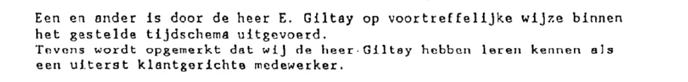

Exhibit · Reference letter
Reference letter from IBM Nederland, 18 October 1994
The passage
“All of this was carried out by Mr E. Giltay in an excellent manner and within the set timetable. It is further noted that we have come to know Mr Giltay as an extremely customer-focused member of staff.” Page 1, the closing paragraph of the letter. Translated from the Dutch; the original wording is below.
Original wording
“Een en ander is door de heer E. Giltay op voortreffelijke wijze binnen het gestelde tijdschema uitgevoerd. Tevens wordt opgemerkt dat wij de heer Giltay hebben leren kennen als een uiterst klantgerichte medewerker.” The letter is typewritten and the scan is faint.

Why this document matters
On 18 October 1994 IBM Nederland’s International Operations Director, H. Brouwer, stated that Giltay was responsible during 1994 for the quality of some forty end-user manuals, that he did the work in an excellent manner and within the set timetable, and that the company came to know him as an extremely customer-focused member of staff. The essay lists professional references from multinationals, among them IBM and Deloitte, as part of the considerable contradictory evidence against the characterisation of Giltay that the Minister of Defence put on record in 1999 and that is still online today in the National Ombudsman’s public report. The letter is the oldest of the four references the essay cites, written four years before the events at the heart of the affair.
Provenance
- Document
- Reference letter, one page, typed
- From
- IBM Nederland N.V., Johan Huizingalaan 757/761, Amsterdam
- To
- ‘L.S.’, the Latin salutation to the reader, so an open reference addressed to whom it may concern
- Date
- Amsterdam, 18 October 1994
- Subject
- Confirmation that E. Giltay was responsible during 1994 for the quality of some forty end-user manuals for the Common Parts Process & Systems (CPP/S) programme
- Work described
- Correcting supplied English texts, interpreting them technically and making them more readable, and introducing a uniform layout
- Signed
- H. Brouwer, International Operations Director of IBM Nederland; the signature itself is blacked out in this copy
- Language
- Dutch
- Pages
- 1
- Held by
- Author’s archive
- See also
- National Ombudsman report 1999/507, 17 December 1999Deloitte appraisal of Giltay, 6 April 2000
Cited in: the essay ‘The Ban Fell, the Book Stood’ in the chapter (3) ‘What the Book Reveals: Srebrenica Cover-up’.
Exhibit page: https://
Document: https://
Last modified 13 September 2026, accessed 3 October 2026.

This page is an exhibit to the book The Cover-up General by Edwin Giltay and its accompanying website.